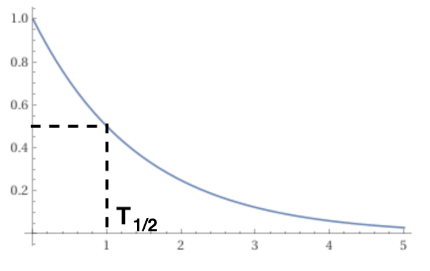
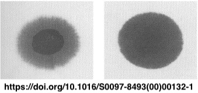
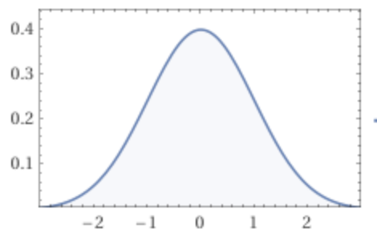
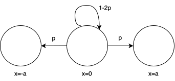

### Understanding Nuclear Decay and Diffusion Phenomena with Dice --- ### Self-introduction <div class="profile-container"> <div class="profile-left"> * Shark (мег-сск) * 🧑💻 Freelance Software Engineer * 🧑🎓 Working student at an online university * Areas of expertise: * 📸 Computer Vision (image recognition/point cloud processing) * 🌍 Spatial Information Processing (GIS/remote sensing) * ☁️ Cloud Infrastructure Design/IaC (AWS, GCP) * [GitHub](https://github.com/s-sasaki-earthsea-wizard) * [YouTube](https://www.youtube.com/@SyotaSasaki-EW) * [Speaker Deck](https://speakerdeck.com/syotasasaki593876) </div> <div class="profile-right"> </div> </div> --- ### Today's Topics <div class="simple-box"> * Consider a simple game where balls are moved based on dice rolls * Show how this game can reproduce nuclear decay and diffusion phenomena (like the spread of ink stains)! * **Experience the power of understanding physical phenomena through simple models!** </div> --- ## Modeling Nuclear Decay --- ### Review of Nuclear Decay <div class="simple-box"> * Nuclear decay is a phenomenon where radioactive materials emit radiation * Atomic nuclei that emit radiation transform into stable nuclei </div> --- ### Rate of Nuclear Decay <div class="simple-box"> * The number of radioactive isotopes decreases exponentially: $N(t) = N_0 e^{-\lambda t}$ * The time it takes for the number of radioactive isotopes to decrease by half is called the half-life $T_{1/2}$ </div> <p></p> --- ### Reproducing Nuclear Decay with Dice <div class="simple-box"> * A box contains $N_0$ balls * Roll a die, and if it shows an even number, remove the ball; if it shows an odd number, leave it in the box * Perform this operation for all balls </div> --- ### Decrease in Balls After One Operation <div class="simple-box"> * Probability of a ball being removed: $p = \frac{1}{2}$ * Probability of a ball remaining: $1-p = \frac{1}{2}$ </div> After one operation, the number of balls will be: $$ N_1 = N_0 - N_0 p = N_0 (1-p) $$ --- ### Decrease in Balls After Two Operations <div class="simple-box"> * After the first operation, the remaining balls: $N_0 (1-p)$ * The same thing happens in the second operation </div> After two operations, the number of balls will be: $$ N_2 = N_0 (1-p)^2 $$ --- ### Repeating the Same Operation <div class="simple-box"> * Since it's the exact same process repeated, after $n$ operations, the number of balls will be: </div> $$ N_n = N_0 (1-p)^n $$ --- ### Generalizing the Dice Game <div class="simple-box"> * Let's say we perform this operation $\lambda$ times with a frequency of $\Delta t$ * Define time $t=n \Delta t$ * Set $p = \lambda \Delta t$ * Our previous example can be considered as the case where $\lambda = 1$ and $\Delta t = 1$ </div> * The number of balls at time $t$ is: $$ N(t) = N_0 (1-p)^n = N_0 (1-\lambda \Delta t)^n $$ --- ### Limit of the Exponent <div class="simple-box"> * Let's recall this formula: $$ \lim_{n \to \infty} \left(1-\dfrac{x}{n}\right)^n = e^{-x} $$ </div> <br> <div class="simple-box"> * Using this formula: $$ N(t) = N_0 \left(1-\lambda \Delta t\right)^n = N_0 \left(1-\dfrac{\lambda t}{n}\right)^n $$ </div> --- ### Reproducing Nuclear Decay <div class="simple-box"> * As $\Delta t \to 0$, taking $n$ so that $t = n \Delta t$ converges: $$ N(t) = N_0 e^{-\lambda t} $$ </div> <br> <div class="highlight-box"> * This matches the nuclear decay equation! * We've successfully reproduced nuclear decay with our dice game! </div> --- ### Half-life <div class="simple-box"> * The half-life $T_{1/2}$ is: $$ N(T_{1/2}) = \frac{N_0}{2} = N_0 e^{-\lambda T_{1/2}} $$ $$ T_{1/2} = \frac{\ln 2}{\lambda} $$ </div> <br> <div class="highlight-box"> * The half-life can be interpreted as "the inverse of the frequency of dice rolls"! </div> --- ## Modeling Diffusion Phenomena --- ### Review of Diffusion Phenomena <div class="simple-box"> * Imagine dropping a drop of ink on a piece of gauze * Initially, only the area where the ink was dropped is stained * Over time, the ink diffuses through the gauze </div> <p></p> --- ### Diffusion Equation <div class="simple-box"> * Diffusion phenomena are described by the diffusion equation * $D$ is the diffusion coefficient * $\rho$ is the concentration $$ \frac{\partial \rho(t, x)}{\partial t} = D \dfrac{\partial^2 \rho(t, x)}{\partial x^2} $$ * Solving with the initial condition $\rho(0, x) = \delta(x)$... </div> --- ### The Solution of Diffusion <div class="simple-box"> * It is a Gaussian distribution $$ \rho(t, x) = \frac{1}{\sqrt{4 \pi D t}} \exp\left(-\frac{x^2}{4 D t}\right) $$ </div> <p></p> --- ### Diffusion Model with Dice <div class="simple-box"> * Move the balls based on the dice roll: * If 1 or 2 is rolled, move $+a$ (probability $p$) * If 3 or 4 is rolled, move $-a$ (probability $p$) * If 5 or 6 is rolled, don't move (probability $1-2p$) </div> <p></p> --- ### Movement of Balls After One Operation <div class="simple-box"> * At $t=0$, all balls are at the origin $x=0$ * Perform this operation once for all balls during $\Delta t$ * Denote the density of balls as $\rho(t, x)$ * The density after $\Delta t$ is: </div> $$ \rho(\Delta t, x) = \rho(0, x) - 2p\rho(0, x) $$ $$+ p\rho(0, x+a) + p\rho(0, x-a) $$ --- ### What Happens When We Repeat the Same Operation? <div class="simple-box"> * Let the density of balls at time $t$ be $\rho(t, x)$ * The density at time $t+\Delta t$ is: </div> $$ \rho(t+\Delta t, x) = \rho(t, x) - 2p\rho(t, x) $$ $$+ p\rho(t, x+a) + p\rho(t, x-a) $$ --- ### Taylor Expansion of Ball Density <div class="simple-box"> * Using Taylor expansion: </div> * For the time derivative: $$ \rho(t+\Delta t, x) = \rho(t, x) + \Delta t \frac{\partial \rho(t, x)}{\partial t} + O(\Delta t^2) $$ * For the spatial derivative: $$ \rho(t, x \pm a) = \rho(t, x) \pm a \frac{\partial \rho(t, x)}{\partial x} + \frac{a^2}{2} \frac{\partial^2 \rho(t, x)}{\partial x^2} + O(a^3) $$ --- ### Deriving the Diffusion <div class="simple-box"> * Substituting the Taylor expansion into the equation for ball density: * Assuming that as $\Delta t \to 0$, the diffusion coefficient converges to $D = \frac{pa^2}{\Delta t}$ </div> $$ \rho(t, x) = \frac{1}{\sqrt{4 \pi D t}} \exp\left(-\frac{x^2}{4 D t}\right) $$ <div class="highlight-box"> * This matches the solution to the diffusion equation! * We've successfully reproduced diffusion phenomena with our dice game! </div> --- ### Diffusion Coefficient <div class="simple-box"> * The diffusion coefficient $D$ represents the speed of diffusion * The larger the diffusion coefficient, the faster the diffusion * The larger the probability $p$, the larger the diffusion coefficient * We assumed that as the time interval $\Delta t \to 0$, $a$ behaves such that the diffusion coefficient converges to $\displaystyle D = \lim_{\Delta t \to 0} \dfrac{pa^2}{\Delta t}$ </div> --- ### Additional Notes <div class="simple-box"> * Why do we only consider up to the first-order term for time derivatives? * And up to the second-order term for spatial derivatives? * The mathematical rigor is guaranteed by **Itô's formula** (details omitted today) </div> --- ### Summary <div class="simple-box"> * We reproduced physical phenomena with a game where balls are moved based on dice rolls! * Nuclear decay * Diffusion phenomena * **We can understand the essence of physics with simple models!** * There are examples where more complex physical phenomena are understood through simple models * I'd like to share some exciting news! </div> --- ### 🎉2025 Boltzmann Medal🎖️ <div class="simple-box"> * [Professor Yoshiki Kuramoto has been awarded the 2025 Boltzmann Medal!](https://www.sci.kyoto-u.ac.jp/ja/news-427) * The Kuramoto model is applied not only in physics but also in biology, engineering, and social sciences * [The video of metronomes synchronizing](https://www.youtube.com/watch?v=6bU9ZPIm3fc) is fascinating! </div> --- ### References - A. Murray and I. Hart, [The 'radioactive dice' experiment: why is the 'half-life' slightly wrong?](https://iopscience.iop.org/article/10.1088/0031-9120/47/2/197), DOI 10.1088/0031-9120/47/2/197 - A paper explaining how nuclear decay can be reproduced by a dice game with a sufficient number of trials - Haruaki Tasaki, [Brownian Motion and Non-equilibrium Statistical Mechanics](http://www.gakushuin.ac.jp/~881791/docs/BMNESM.pdf) - Has a very clear explanation of diffusion phenomena through Brownian motion --- ### Call for LT Speakers <div class="simple-box"> * The Physics Meeting is looking for LT speakers! * Any genre is welcome! * If we don't get any submissions, the organizer will have to do another "LT" (which is actually just a solo recital)... * If you're interested, please contact us on the Physics Meeting Discord server! </div> <img src="assets/images/qrcode.png" width="200px"> --- ### Announcements <div class="simple-box"> * The next meeting is scheduled for May 31st * In addition to LTs, we also welcome suggestions for physics videos on YouTube that you'd like to watch together! </div>